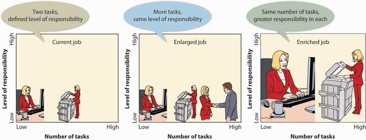
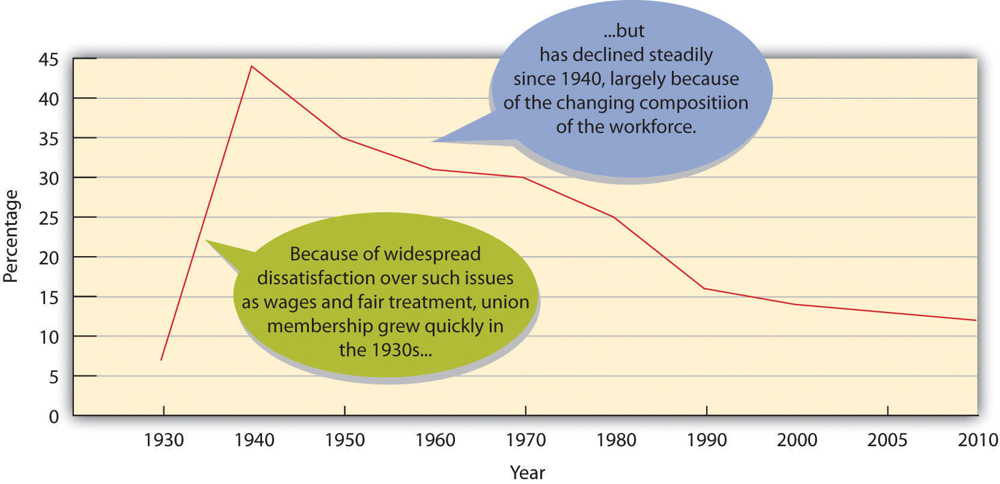

Howard Schultz has vivid memories of his father slumped on the couch with his leg in a cast.Introductory material on Howard Schultz and Starbucks comes from Howard Schultz and Dori Jones Yang, Pour Your Heart into It: How Starbucks Built a Company One Cup at a Time (New York: Hyperion, 1997), 3–8. The ankle would heal, but his father had lost another job—this time as a driver for a diaper service. It was a crummy job; still, it put food on the table, and if his father couldn’t work, there wouldn’t be any money. Howard was seven, but he understood the gravity of the situation, particularly because his mother was seven months pregnant, and the family had no insurance.
This was just one of the many setbacks that plagued Schultz’s father throughout his life—an honest, hard-working man frustrated by a system that wasn’t designed to cater to the needs of common workers. He’d held a series of blue-collar jobs (cab driver, truck driver, factory worker), sometimes holding two or three at a time. Despite his willingness to work, he never earned enough money to move his family out of Brooklyn’s federally subsidized housing projects. Schultz’s father died never having found fulfillment in his work life—or even a meaningful job. It was the saddest day of Howard’s life.

Howard Schultz toasts at the launch of their new “everyday” brew, Pike Place Roast, April 8, 2008, in Bryant Park in New York City.
Photo by Mario Tama/Getty Images
As a kid, did Schultz ever imagine that one day he’d be the founder and chairman of Starbucks Coffee Company? Of course not. But he did decide that if he was ever in a position to make a difference in the lives of people like his father, he’d do what he could. Remembering his father’s struggles and disappointments, Schultz has tried to make Starbucks the kind of company where he wished his father had worked. “Without even a high school diploma,” Schultz admits, “my father probably could never have been an executive. But if he had landed a job in one of our stores or roasting plants, he wouldn’t have quit in frustration because the company didn’t value him. He would have had good health benefits, stock options, and an atmosphere in which his suggestions or complaints would receive a prompt, respectful response.”Howard Schultz and Dori Jones Yang, Pour Your Heart into It: How Starbucks Built a Company One Cup at a Time (New York: Hyperion, 1997), 138.
Schultz is motivated by both personal and business considerations: “When employees have self-esteem and self-respect,” he argues, “they can contribute so much more: to their company, to their family, to the world.”Howard Schultz and Dori Jones Yang, Pour Your Heart into It: How Starbucks Built a Company One Cup at a Time (New York: Hyperion, 1997), 6–7. His commitment to his employees is embedded in Starbuck’s mission statement, whose first objective is to “provide a great work environment and treat each other with respect and dignity.”“Our Starbucks Mission Statement,” Starbucks, http://www.starbucks.com/about-us/company-information/mission-statement (accessed October 8, 2011). Those working at Starbucks are called partners because Schultz believes working for his company is not just a job, it’s a passion.“Our Starbucks Mission Statement,” Starbucks, http://www.starbucks.com/about-us/company-information/mission-statement (accessed October 8, 2011).
A major piece of the Starbucks success story has been the superior service provided by its motivated employees.
Employees at Starbucks are vital to the company’s success. They are its public face, and every dollar of sales passes through their hands.Howard Schultz and Dori Jones Yang, Pour Your Heart into It: How Starbucks Built a Company One Cup at a Time (New York: Hyperion, 1997), 125. According to Howard Schultz, they can make or break the company. If a customer has a positive interaction with an employee, the customer will come back. If an encounter is negative, the customer is probably gone for good. That’s why it’s crucial for Starbucks to recruit and hire the right people, train them properly, motivate them to do their best, and encourage them to stay with the company. Thus, the company works to provide satisfying jobs, a positive work environment, appropriate work schedules, and fair compensation and benefits. These activities are part of Starbucks’s strategy to deploy human resources in order to gain competitive advantage. The process is called human resource management (HRM)All actions that an organization takes to attract, develop, and retain quality employees., which consists of all actions that an organization takes to attract, develop, and retain quality employees. Each of these activities is complex. Attracting talented employees involves the recruitment of qualified candidates and the selection of those who best fit the organization’s needs. Development encompasses both new-employee orientation and the training and development of current workers. Retaining good employees means motivating them to excel, appraising their performance, compensating them appropriately, and doing what’s possible to retain them.
How does Starbucks make sure that its worldwide retail locations are staffed with just the right number of committed employees? How does Walt Disney World ensure that it has enough qualified “cast members” to provide visitors with a “magical” experience? How does Norwegian Cruise Lines make certain that when the Norwegian Dawn pulls out of New York harbor, it has a complete, fully trained crew on board to feed, entertain, and care for its passengers? Managing these tasks is a matter of strategic human resource planningProcess of developing a plan for satisfying an organization’s human resource needs.—the process of developing a plan for satisfying an organization’s human resources (HR) needs.
A strategic HR plan lays out the steps that an organization will take to ensure that it has the right number of employees with the right skills in the right places at the right times. HR managers begin by analyzing the company’s mission, objectives, and strategies. Starbucks’s objectives, for example, include the desire to “develop enthusiastically satisfied customers”“Our Starbucks Mission Statement,” Starbucks, http://www.starbucks.com/about-us/company-information/mission-statement (accessed October 8, 2011). as well as to foster an environment in which employees treat both customers and each other with respect. Thus, the firm’s HR managers look for people who are “adaptable, self-motivated, passionate, creative team members.”“25 Top MBA Employers,” CNNMoney, http://money.cnn.com/galleries/2007/fortune/0704/gallery.MBA_employers.fortune/14.html (accessed October 8, 2011). Likewise, Disney’s overall objectives include not only making all visitors feel as if they’re special in a special place but also ensuring that employees’ appearance reflects a special image (there’s even a forty-seven-page book on the subject).“How Disney Puts the Magic in Recruiting,” Vault, http://www.vault.com/nr/newsmain.jsp?nr_page=3&ch_id=400&article_id=51875&cat_id=1083 (accessed May 6, 2006). Disney looks for people who best fulfill these job requirements. The main goal of Norwegian Cruise Lines—to lavish passengers with personal attention—determines not only the type of employee desired (one with exceptionally good customer-relation skills and a strong work ethic) but also the number needed (one for every two passengers on the Norwegian Dawn).“Overview of Careers on Cruise Ships,” Career Prospects in Virginia, http://www3.ccps.virginia.edu/career_prospects/briefs/PS/SummaryCruise.shtml (accessed May 6, 2006).
To develop an HR plan, HR managers must obviously be knowledgeable about the jobs that the organization needs performed. They organize information about a given job by performing a job analysisIdentification of the tasks, responsibilities, and skills of a job, as well as the knowledge and abilities needed to perform it. to identify the tasks, responsibilities, and skills that it entails, as well as the knowledge and abilities needed to perform it. Managers also use the information collected for the job analysis to prepare two documents:
Once they’ve analyzed the jobs within the organization, HR managers must forecast future hiring (or firing) needs. This is the three-step process summarized in Figure 7.1 "How to Forecast Hiring (and Firing) Needs".
Figure 7.1 How to Forecast Hiring (and Firing) Needs

Starbucks, for instance, might find that it needs three hundred new employees to work at stores scheduled to open in the next few months. Disney might determine that it needs two thousand new cast members to handle an anticipated surge in visitors. The Norwegian Dawn might be short two dozen restaurant workers because of an unexpected increase in reservations.
After calculating the disparity between supply and future demand, HR managers must draw up plans for bringing the two numbers into balance. If the demand for labor is going to outstrip the supply, they may hire more workers, encourage current workers to put in extra hours, subcontract work to other suppliers, or introduce labor-saving initiatives. If the supply is greater than the demand, they may deal with overstaffing by not replacing workers who leave, encouraging early retirements, laying off workers, or (as a last resort) firing workers.
Armed with information on the number of new employees to be hired and the types of positions to be filled, the HR manager then develops a strategy for recruiting potential employees. RecruitingProcess of identifying suitable candidates and encouraging them to apply for openings in the organization. is the process of identifying suitable candidates and encouraging them to apply for openings in the organization.
Before going any further, we should point out that, in recruiting and hiring, managers must comply with antidiscrimination laws; violations can have legal consequences. DiscriminationPractice of treating a person unfairly on the basis of a characteristic unrelated to ability. occurs when a person is treated unfairly on the basis of a characteristic unrelated to ability. Under federal law, it’s illegal to discriminate in recruiting and hiring on the basis of race, color, religion, sex, national origin, age, or disability. (The same rules apply to other employment activities, such as promoting, compensating, and firing.)The U.S. Equal Employment Opportunity Commission, “Discriminatory Practices,” http://www.eeoc.gov/laws/practices/index.cfm (accessed October 8, 2011). The Equal Employment Opportunity Commission (EEOC)Federal agency in charge of enforcing federal laws on employment discrimination. enforces a number of federal employment laws, including the following:
The first step in recruiting is to find qualified candidates. Where do you look for them, and how do you decide whether they’re qualified? Let’s start with the second part of the question first. A qualified person must be able to perform the duties listed in the job description and must possess the skills, knowledge, and abilities detailed in the job specification. In addition, he or she must be a good “fit” for the company. A Disney recruiter, for example, wants a candidate who fits a certain image—someone who’s clean-cut and “wholesome” looking. The same recruiter might also favor candidates with certain qualities—someone who has a “good attitude,” who’s a “go-getter” and a “team player,” and who’s smart, responsible, and stable.Bob Nelson and Peter Economy, Managing for Dummies, 2nd ed. (New York: Wiley, 2003), 60.
Where do you find people who satisfy so many criteria? Basically, you can look in two places: inside and outside your own organization. Both options have pluses and minuses. Hiring internally sends a positive signal to employees that they can move up in the company—a strong motivation tool and a reward for good performance. In addition, because an internal candidate is a known quantity, it’s easier to predict his or her success in a new position. Finally, it’s cheaper to recruit internally. On the other hand, you’ll probably have to fill the promoted employee’s position. Going outside gives you an opportunity to bring fresh ideas and skills into the company. In any case, it’s often the only alternative, especially if no one inside the company has just the right combination of skills and experiences. Entry-level jobs usually have to be filled from the outside.
Whether you search inside or outside the organization, you need to publicize the opening. If you’re looking internally in a small organization, you can alert employees informally. In larger organizations, HR managers generally post openings on bulletin boards (often online) or announce them in newsletters. They can also seek direct recommendations from various supervisors.
Recruiting people from outside is more complicated. It’s a lot like marketing a product to buyers: in effect, you’re marketing the virtues of working for your company. Starbucks uses the following outlets to advertise openings:
When asked what it takes to attract the best people, Starbucks’s senior executive Dave Olsen replied, “Everything matters.” Everything Starbucks does as a company bears on its ability to attract talent. Accordingly, everyone is responsible for recruiting, not just HR specialists. In fact, the best source of quality applicants is the company’s own labor force.David Lee, “Becoming a Talent Magnet: Your First Task as a Recruiter: Recruit Senior Management onto Your Team,” http://www.humannatureatwork.com/Recruiting-Employees.htm (accessed October 8, 2011).
Recruiting gets people to apply for positions, but once you’ve received applications, you still have to select the best candidate—another complicated process. The selectionProcess of gathering information on candidates, evaluating their qualifications, and choosing the right one. process entails gathering information on candidates, evaluating their qualifications, and choosing the right one. At the very least, the process can be time-consuming—particularly when you’re filling a high-level position—and often involves several members of an organization.
Let’s examine the selection process more closely by describing the steps that you’d take to become a special agent for the Federal Bureau of Investigation (FBI).The information in this section comes from two sources: Federal Bureau of Investigation, “Jobs: Special Agents,” http://www.fbijobs.gov/ (accessed October 9, 2011); “Special Agent Application and Hiring Process,” Federal Bureau of Investigations, http://www.fbijobs.gov/112.asp, (accessed October 9, 2011). Most business students don’t generally aspire to become FBI agents, but the FBI is quite interested in business graduates—especially if you have a major in accounting or finance. With one of these backgrounds, you’ll be given priority in hiring. Why? Unfortunately, there’s a lot of white-collar crime that needs to be investigated, and people who know how to follow the money are well suited for the task.
The first step in becoming a gun-toting accountant is, obviously, applying for the job. Don’t bother unless you meet the minimum qualifications: you must be a U.S. citizen, be age twenty-three to thirty-seven, be physically fit, and have a bachelor’s degree. To provide factual information on your education and work background, you’ll submit an applicationDocument completed by a job applicant that provides factual information on the person’s education and work background., which the FBI will use as an initial screening tool.
Next comes a battery of tests (a lot more than you’d take in applying for an everyday business position). Like most organizations, the FBI tests candidates on the skills and knowledge entailed by the job. Unlike most businesses, however, the FBI will also measure your aptitude, evaluate your personality, and assess your writing ability. You’ll have to take a polygraph (lie-detector) test to determine the truthfulness of the information you’ve provided, uncover the extent of any drug use, and disclose potential security problems.
If you pass all these tests (with sufficiently high marks), you’ll be granted an interviewFormal meeting during which the employer learns more about an applicant and the applicant learns more about the prospective employer.. It serves the same purpose as it does for business recruiters: it allows the FBI to learn more about you and gives you a chance to learn more about your prospective employer and your possible future in the organization. The FBI conducts structured interviews—a series of standard questions. You’re judged on both your answers and your ability to communicate orally.
Let’s be positive and say you passed the interview. What’s next? You still have to pass a rigorous physical examination (including a drug test), as well as background and reference checks. Given its mission, the FBI sets all these hurdles a little higher than the average retail clothing chain. Most businesses will ask you to take a physical exam, but you probably won’t have to meet the fitness standards set by the FBI. Likewise, many businesses check references to verify that applicants haven’t lied about (or exaggerated) their education and work experience. The FBI goes to great lengths to ensure that candidates are suitable for law-enforcement work.
The last stage in the process is out of your control. Will you be hired or rejected? This decision is made by one or more people who work for the prospective employer. For a business, the decision maker is generally the line manager who oversees the position being filled. At the FBI, the decision is made by a team at FBI headquarters. If you’re hired as a special agent, you’ll spend twenty-one weeks of intensive training at the FBI Academy in Quantico, Virginia.
Though most people hold permanent, full-time positions, there’s a growing number of individuals who work at temporary or part-time jobs. Many of these are contingent workersTemporary or part-time worker hired to supplement a company’s permanent workforce. hired to supplement a company’s permanent workforce. Most of them are independent contractors, consultants, or freelancers who are paid by the firms that hire them. Others are on-call workers who work only when needed, such as substitute teachers. Still others are temporary workers (or “temps”) who are employed and paid by outside agencies or contract firms that charge fees to client companies.
The use of contingent workers provides companies with a number of benefits. Because they can be hired and fired easily, employers can better control labor costs. When things are busy, they can add temps, and when business is slow, they can release unneeded workers. Temps are often cheaper than permanent workers, particularly because they rarely receive costly benefits. Employers can also bring in people with specialized skills and talents to work on special projects without entering into long-term employment relationships. Finally, companies can “try out” temps: if someone does well, the company can offer permanent employment; if the fit is less than perfect, the employer can easily terminate the relationship. There are downsides to the use of contingent workers, including increased training costs and decreased loyalty to the company. Also, many employers believe that because temps are usually less committed to company goals than permanent workers, productivity suffers.
What about you? Does temporary work appeal to you? On the plus side, you can move around to various companies and gain a variety of skills. You can see a company from the inside and decide up front whether it’s the kind of place you’d like to work at permanently. If it is, your temporary position lets you showcase your skills and talents and grab the attention of management, which could increase the likelihood you’ll be offered a permanent position. There are also some attractive lifestyle benefits. You might, for example, work at a job or series of jobs for, say, ten months and head for the beach for the other two. On the other hand, you’ll probably get paid less, receive no benefits, and have no job security. For most people, the idea of spending two months a year on the beach isn’t that appealing.
You’re the chairperson of the management department at your college. Describe the steps you’d take to ensure that your department has enough qualified faculty to meet its needs.
Because companies can’t survive unless employees do their jobs well, it makes economic sense to train them and develop their skills. This type of support begins when an individual enters the organization and continues as long as he or she stays there.
Have you ever started your first day at a new job feeling upbeat and optimistic only to walk out at the end of the day thinking that maybe you’ve taken the wrong job? If this happens too often, your employer may need to revise its approach to orientationActivities involved in introducing new employees to the organization and their jobs.—the way it introduces new employees to the organization and their jobs. Starting a new job is a little like beginning college; at the outset, you may be experiencing any of the following feelings:
The employer who understands how common such feelings are is more likely not only to help newcomers get over them but also to avoid the pitfalls often associated with new-employee orientation:
A good employer will take things slowly, providing you with information about the company and your job on a need-to-know basis while making you feel as comfortable as possible. You’ll get to know the company’s history, traditions, policies, and culture over time. You’ll learn more about salary and benefits and how your performance will be evaluated. Most importantly, you’ll find out how your job fits into overall operations and what’s expected of you.
It would be nice if employees came preprogrammed with all the skills they need to do their jobs. It would also be nice if job requirements stayed the same: once you’ve learned how to do a job (or been preprogrammed), you’d know how to do it forever. In reality, new employees must be trained; moreover, as they grow in their jobs or as their jobs change, they’ll need additional training. Unfortunately, training is costly and time-consuming.
How costly? On average, for every $1 in payroll, large companies spend close to $0.03 in employee training and development.“2010 Training Industry Report,” Training Magazine, November 2010, http://www.trainingmag.com/article/2010-training-industry-report (accessed October 9, 2011). The consulting firm Booz Allen Hamilton invests almost $0.08 in employee training and development. At Pfizer, the world’s largest pharmaceutical company, the total is $0.14 out of every payroll dollar.“Top 100: Top Five Profile and Rank,” Training Magazine, March 2004, 42. What’s the payoff? Why are such companies willing to spend so much money on their employees? Pfizer, whose motto is “Succeed through People,” regards employee growth and development as its top priority. At Booz Allen Hamilton, consultants specialize in finding innovative solutions to client problems, and their employer makes sure that they’re up-to-date on all the new technologies by maintaining a “technology petting zoo” at its training headquarters. It’s called a “petting zoo” because employees get to see, touch, and interact with new and emerging technologies. For example, those attending the “petting zoo” several years ago got to try out the Segway Human Transporter even before it hit the market.Tammy Galvin, “The 2003 Training Top 100,” Training Magazine, March 2003, 2.
At Booz Allen Hamilton’s technology “petting zoo,” employees are receiving off-the-job trainingFormal employee training that occurs in a location away from the office.. This approach allows them to focus on learning without the distractions that would occur in the office. More common, however, is informal on-the-job trainingEmployee training (often informal) that occurs while the employee is on the job., which may be supplemented with formal training programs. This is the method, for example, by which you’d move up from mere coffee maker to a full-fledged “barista” if you worked at Starbucks.Brooke Locascio, “Working at Starbucks: More Than Just Pouring Coffee,” Tea and Coffee, January/February 2004, http://www.teaandcoffee.net/0104/coffee.htm (accessed October 9, 2011). You’d begin by reading a large spiral book (titled Starbucks University) on the responsibilities of the barista. After you’ve passed a series of tests on the reading material, you’ll move behind the coffee bar, where a manager or assistant manager will give you hands-on experience in making drinks. According to the rules, you can’t advance to a new drink until you’ve mastered the one you’re working on; the process, therefore, may take a few days (or even weeks). Next, you have to learn enough about different types of coffee to be able to describe them to customers. (Because this course involves drinking a lot of coffee, you don’t have to worry about staying awake.) Eventually, you’ll be declared a coffee connoisseur, but there’s still one more set of skills to master: you must complete a customer-service course, which trains you in making eye contact with customers, anticipating their needs, and making them feel welcome.Howard Schultz and Dori Jones Yang, Pour Your Heart into It: How Starbucks Built a Company One Cup at a Time (New York: Hyperion, 1997), 250–51.
The makeup of the U.S. workforce has changed dramatically over the past 50 years. In the 1950s, more than 60 percent was composed of white males.Judith Lindenberger and Marian Stoltz-Loike, “Diversity in the Workplace,” The Economics and Policy Resource Center, http://www.zeromillion.com/econ/workplace-diversity.html (accessed October 9, 2011). Today’s workforce, however, reflects the broad range of differences in the population—differences in gender, race, ethnicity, age, physical ability, religion, education, and lifestyle. As you can see in Table 7.1 "Employment by Gender and Ethnic Group", more women and minorities have entered the workforce, and white males now make up only 36 percent of the workforce.U.S. Equal Employment Opportunity Commission, “Occupational Employment in Private Industry by Race/Ethnic Group/Sex, and by Industry, United States, 2006,” http://archive.eeoc.gov/stats/jobpat/2006/national.html (accessed October 10, 2011). Their percentage representation diminished as more women and minorities entered the workforce.
Most companies today strive for diverse workforces. HR managers work hard to recruit, hire, develop, and retain a workforce that’s representative of the general population. In part, these efforts are motivated by legal concerns: discrimination in recruiting, hiring, advancement, and firing is illegal under federal law and is prosecuted by the EEOC.U.S. Equal Employment Opportunity Commission, “Federal Laws Prohibiting Job Discrimination: Questions and Answers,” Federal Equal Employment Opportunity (EEO) Laws, http://www.eeoc.gov/facts/qanda.html (accessed October 9, 2011). Companies that violate antidiscrimination laws not only are subject to severe financial penalties but also risk damage to their reputations. In November 2004, for example, the EEOC charged that recruiting policies at Abercrombie & Fitch, a national chain of retail clothing stores, had discriminated against minority and female job applicants between 1999 and 2004. The employer, charged the EEOC, had hired a disproportionate number of white salespeople, placed minorities and women in less visible positions, and promoted a virtually all-white image in its marketing efforts. Six days after the EEOC filed a lawsuit, the company settled the case at a cost of $50 million, but the negative publicity will hamper both recruitment and sales for some time to come.U.S. Equal Employment Opportunity Commission, “EEOC Agrees to Landmark Resolution of Discrimination Case Against Abercrombie & Fitch,” http://www.eeoc.gov/press/11-18-04.html (accessed October 10, 2011).
Table 7.1 Employment by Gender and Ethnic Group
| Group | Total (%) | Males (%) | Females (%) |
|---|---|---|---|
| All employees | 100 | 52 | 48 |
| White | 68 | 36 | 32 |
| African American | 14 | 6 | 8 |
| Hispanic or Latino | 13 | 7 | 5 |
| Asian/Pacific Islander/Other | 5 | 3 | 3 |
There’s good reason for building a diverse workforce that goes well beyond mere compliance with legal standards. It even goes beyond commitment to ethical standards. It’s good business. People with diverse backgrounds bring fresh points of view that can be invaluable in generating ideas and solving problems. In addition, they can be the key to connecting with an ethnically diverse customer base. If a large percentage of your customers are Hispanic, it might make sense to have a Hispanic marketing manager. In short, capitalizing on the benefits of a diverse workforce means that employers should view differences as assets rather than liabilities.
(AACSB) Reflective Skills
Think about a full-time or part-time job that you’ve held. Was your orientation to the job satisfactory? If not, how would you have improved the process? Did you receive any training? Was it useful? What additional training would have helped you do a better job? How would it have benefited the company?
(AACSB) Diversity
While visiting a mall in Los Angeles, you noticed two stores located side by side selling electronic-entertainment products—CDs, DVDs, and so on. All the employees in one store were white males. The mix of workers in the other store—which happened to be more profitable—was more diverse. Why do you think the store with the diverse workforce did more business? In terms of diversity, what would be your ideal workforce in a store similar to these in Los Angeles?
MotivationInternally generated drive to achieve a goal or follow a particular course of action. refers to an internally generated drive to achieve a goal or follow a particular course of action. Highly motivated employees focus their efforts on achieving specific goals; those who are unmotivated don’t. It’s the manager’s job, therefore, to motivate employees—to get them to try to do the best job they can. But what motivates employees to do well? How does a manager encourage employees to show up for work each day and do a good job? Paying them helps, but many other factors influence a person’s desire (or lack of it) to excel in the workplace. What are these factors? Are they the same for everybody? Do they change over time? To address these questions, we’ll examine four of the most influential theories of motivation: hierarchy-of-needs theory, two-factor theory, expectancy theory, and equity theory.
Psychologist Abraham Maslow’s hierarchy-of-needs theoryTheory of motivation that holds that people are motivated by a hierarchical series of unmet needs. proposed that we are motivated by the five unmet needs, arranged in the hierarchical order shown in Figure 7.3 "Maslow’s Hierarchy-of-Needs Theory", which also lists examples of each type of need in both the personal and work spheres of life. Look, for instance, at the list of personal needs in the left-hand column. At the bottom are physiological needs (such life-sustaining needs as food and shelter). Working up the hierarchy we experience safety needs (financial stability, freedom from physical harm), social needs (the need to belong and have friends), esteem needs (the need for self-respect and status), and self-actualization needs (the need to reach one’s full potential or achieve some creative success).
Figure 7.3 Maslow’s Hierarchy-of-Needs Theory

There are two things to remember about Maslow’s model:
Let’s say, for example, that you’ve just returned to college and that for a variety of reasons that aren’t your fault, you’re broke, hungry, and homeless. Because you’ll probably take almost any job that will pay for food and housing (physiological needs), you go to work repossessing cars. Fortunately, your student loan finally comes through, and with enough money to feed yourself, you can look for a job that’s not so risky (a safety need). You find a job as a night janitor in the library, and though you feel secure, you start to feel cut off from your friends, who are active during daylight hours. You want to work among people, not books (a social need). So now you join several of your friends selling pizza in the student center. This job improves your social life, but even though you’re very good at making pizzas, it’s not terribly satisfying. You’d like something that will let you display your intellectual talents (an esteem need). So you study hard and land a job as an intern in the governor’s office. On graduation, you move up through a series of government appointments and eventually run for state senator. As you’re sworn into office, you realize that you’ve reached your full potential (a self-actualization need) and you comment to yourself, “It doesn’t get any better than this.”
What implications does Maslow’s theory have for business managers? There are two key points: (1) Not all employees are driven by the same needs, and (2) the needs that motivate individuals can change over time. Managers should consider which needs different employees are trying to satisfy and should structure rewards and other forms of recognition accordingly. For example, when you got your first job repossessing cars, you were motivated by the need for money to buy food. If you’d been given a choice between a raise or a plaque recognizing your accomplishments, you’d undoubtedly have opted for the money. As a state senator, by contrast, you may prefer public recognition of work well done (say, election to higher office) to a pay raise.
Another psychologist, Frederick Herzberg, set out to determine which work factors (such as wages, job security, or advancement) made people feel good about their jobs and which factors made them feel bad about their jobs. He surveyed workers, analyzed the results, and concluded that to understand employee satisfaction (or dissatisfaction), he had to divide work factors into two categories:
Figure 7.5 "Herzberg’s Two-Factor Theory" illustrates Herzberg’s two-factor theoryTheory that holds that motivation involves both motivation factors (which contribute to job satisfaction) and hygiene factors (which help to prevent job dissatisfaction).. Note that motivation factors (such as promotion opportunities) relate to the nature of the work itself and the way the employee performs it. Hygiene factors (such as physical working conditions) relate to the environment in which it’s performed. (Note, too, the similarity between Herzberg’s motivation factors and Maslow’s esteem and self-actualization needs.)
Figure 7.5 Herzberg’s Two-Factor Theory

We’ll ask the same question about Herzberg’s model as we did about Maslow’s: What does it mean for managers? Suppose you’re a senior manager in an accounting firm, where you supervise a team of accountants, each of whom has been with the firm for five years. How would you use Herzberg’s model to motivate the employees who report to you? Let’s start with hygiene factors. Are salaries reasonable? What about working conditions? Does each accountant have his or her own workspace, or are they crammed into tiny workrooms? Are they being properly supervised or are they left on their own to sink or swim? If hygiene factors like these don’t meet employees’ expectations, they may be dissatisfied with their jobs.
As you can see in Figure 7.5 "Herzberg’s Two-Factor Theory", fixing problems related to hygiene factors may alleviate job dissatisfaction, but it won’t necessarily improve anyone’s job satisfaction. To increase satisfaction (and motivate someone to perform better), you must address motivation factors. Is the work itself challenging and stimulating? Do employees receive recognition for jobs well done? Will the work that an accountant has been assigned help him or her to advance in the firm? According to Herzberg, motivation requires a twofold approach: eliminating dissatisfiers and enhancing satisfiers.
If you were a manager, wouldn’t you like to know how your employees decide to work hard or goof off? Wouldn’t it be nice to know whether a planned rewards program will have the desired effect—namely, motivating them to perform better in their jobs? Wouldn’t it be helpful if you could measure the effect of bonuses on employee productivity? These are the issues considered by psychologist Victor Vroom in his expectancy theoryTheory of motivation that proposes that employees will work hard to earn rewards they value and consider obtainable., which proposes that employees will work hard to earn rewards that they value and that they consider obtainable.
As you can see from Figure 7.6 "Vroom’s Expectancy Theory", Vroom argues that an employee will be motivated to exert a high level of effort to obtain a reward under three conditions:
Figure 7.6 Vroom’s Expectancy Theory

To apply expectancy theory to a real-world situation, let’s analyze an automobile-insurance company with one hundred agents who work from a call center. Assume that the firm pays a base salary of $2,000 a month, plus a $200 commission on each policy sold above ten policies a month. In terms of expectancy theory, under what conditions would an agent be motivated to sell more than ten policies a month?
Now let’s alter the scenario slightly. Say that the company raises prices, thus making it harder to sell the policies. How will agents’ motivation be affected? According to expectancy theory, motivation will suffer. Why? Because agents may be less confident that their efforts will lead to satisfactory performance. What if the company introduces a policy whereby agents get bonuses only if buyers don’t cancel policies within ninety days? How will this policy affect motivation? Now agents may be less confident that they’ll get bonuses even if they do sell more than ten policies. Motivation will decrease because the link between performance and reward has been weakened. Finally, what will happen if bonuses are cut from $200 to $25? Obviously, the reward would be of less value to agents, and, again, motivation will suffer. The message of expectancy theory, then, is fairly clear: managers should offer rewards that employees value, set performance levels that they can reach, and ensure a strong link between performance and reward.
What if you spent thirty hours working on a class report, did everything you were supposed to do, and handed in an excellent assignment (in your opinion). Your roommate, on the other hand, spent about five hours and put everything together at the last minute. You know, moreover, that he ignored half the requirements and never even ran his assignment through a spell-checker. A week later, your teacher returns the reports. You get a C and your roommate gets a B+. In all likelihood, you’ll feel that you’ve been treated unfairly relative to your roommate.
Your reaction makes sense according to the equity theoryTheory of motivation that focuses on our perceptions of how fairly we’re treated relative to others. of motivation, which focuses on our perceptions of how fairly we’re treated relative to others. Applied to the work environment, this theory proposes that employees analyze their contributions or job inputs (hours worked, education, experience, work performance) and their rewards or job outcomes (salary, benefits, recognition). Then they create a contributions/rewards ratio and compare it to those of other people. The basis of comparison can be any one of the following:
When individuals perceive that the ratio of their contributions to rewards is comparable to that of others, they perceive that they’re being treated equitably; when they perceive that the ratio is out of balance, they perceive inequity. Occasionally, people will perceive that they’re being treated better than others. More often, however, they conclude that others are being treated better (and that they themselves are being treated worse). This is what you concluded when you saw your grade. You’ve calculated your ratio of contributions (hours worked, research and writing skills) to rewards (project grade), compared it to your roommate’s ratio, and concluded that the two ratios are out of balance.
What will an employee do if he or she perceives an inequity? The individual might try to bring the ratio into balance, either by decreasing inputs (working fewer hours, refusing to take on additional tasks) or by increasing outputs (asking for a raise). If this strategy fails, an employee might complain to a supervisor, transfer to another job, leave the organization, or rationalize the situation (perhaps deciding that the situation isn’t so bad after all). Equity theory advises managers to focus on treating workers fairly, especially in determining compensation, which is, naturally, a common basis of comparison.
This chapter describes four theories of motivation: hierarchy-of-needs theory, two-factor theory, expectancy theory, and equity theory. Briefly describe each theory. Which one makes the most intuitive sense to you? Why do you find it appealing?
Every year, the Great Places to Work Institute analyzes comments from thousands of employees and compiles a list of “The 100 Best Companies to Work for in America,” which is published in Fortune magazine. Having compiled its list for more than twenty years, the institute concludes that the defining characteristic of a great company to work for is trust between managers and employees. Employees overwhelmingly say that they want to work at a place where employees “trust the people they work for, have pride in what they do, and enjoy the people they work with.”“What Is a Great Workplace?,” Great Place to Work Institute, http://www.greatplacetowork.com/our-approach/what-is-a-great-workplace (accessed October 10, 2011). They report that they’re motivated to perform well because they’re challenged, respected, treated fairly, and appreciated. They take pride in what they do, are made to feel that they make a difference, and are given opportunities for advancement.“What do Employees Say?” Great Place to Work Institute, http://www.greatplacetowork.com/great/employees.php (accessed May 6, 2006). The most effective motivators, it would seem, are closely aligned with Maslow’s higher-level needs and Herzberg’s motivating factors.
The average employee spends more than two thousand hours a year at work. If the job is tedious, unpleasant, or otherwise unfulfilling, the employee probably won’t be motivated to perform at a very high level. Many companies practice a policy of job redesignManagement strategy used to increase job satisfaction by making jobs more interesting and challenging. to make jobs more interesting and challenging. Common strategies include job rotation, job enlargement, and job enrichment.
Specialization promotes efficiency because workers get very good at doing particular tasks. The drawback is the tedium of repeating the same task day in and day out. The practice of job rotationJob redesign strategy that allows employees to rotate from one job to another on a systematic basis. allows employees to rotate from one job to another on a systematic basis, eventually cycling back to their original tasks. A computer maker, for example, might rotate a technician into the sales department to increase the employee’s awareness of customer needs and to give the employee a broader understanding of the company’s goals and operations. A hotel might rotate an accounting clerk to the check-in desk for a few hours each day to add variety to the daily workload. Rotated employees develop new skills and gain experience that increases their value to the company, which benefits management because cross-trained employees can fill in for absentees, thus providing greater flexibility in scheduling.
Instead of a job in which you performed just one or two tasks, wouldn’t you prefer a job that gave you many different tasks? In theory, you’d be less bored and more highly motivated if you had a chance at job enlargementJob redesign strategy in which management enhances a job by adding tasks at similar skill levels.—the policy of enhancing a job by adding tasks at similar skill levels (see Figure 7.7 "Job Enlargement versus Job Enrichment"). The job of sales clerk, for example, might be expanded to include gift-wrapping and packaging items for shipment. The additional duties would add variety without entailing higher skill levels.
Figure 7.7 Job Enlargement versus Job Enrichment
As you can see from Figure 7.7 "Job Enlargement versus Job Enrichment", merely expanding a job by adding similar tasks won’t necessarily “enrich” it by making it more challenging and rewarding. Job enrichmentJob redesign strategy in which management enriches a job by adding tasks that increase both responsibility and opportunity for growth. is the practice of adding tasks that increase both responsibility and opportunity for growth. It provides the kinds of benefits that, according to Maslow and Herzberg, contribute to job satisfaction: stimulating work, sense of personal achievement, self-esteem, recognition, and a chance to reach your potential.
Consider, for example, the evolving role of support staff in the contemporary office. Today, employees who used to be called “secretaries” assume many duties previously in the domain of management, such as project coordination and public relations. Information technology has enriched their jobs because they can now apply such skills as word processing, desktop publishing, creating spreadsheets, and managing databases. That’s why we now hear such a term as administrative assistant instead of secretary.Sandra Kerka, “The Changing Role of Support Staff,” http://calpro-online.com/eric/docgen.asp?tbl=archive&ID=A019 (accessed October 10, 2011).
Building a career requires a substantial commitment in time and energy, and most people find that they aren’t left with much time for nonwork activities. Fortunately, many organizations recognize the need to help employees strike a balance between their work and home lives.Jeffrey Greenhaus, Karen Collins, and Jason Shaw, “The Relationship between Work-Family Balance and Quality of Life,” Journal of Vocational Behavior 63, 2003, 510–31. By helping employees combine satisfying careers and fulfilling personal lives, companies tend to end up with a happier, less-stressed, and more productive workforce. The financial benefits include lower absenteeism, turnover, and health care costs.
The accounting firm KPMG, which has made the list of the “100 Best Companies for Working Mothers” for twelve years,KPMG firm Web site, Careers Section, http://www.kpmgcareers.com/whoweare/awards.shtml (accessed October 11, 2011). is committed to promoting a balance between its employees’ work and personal lives. KPMG offers a variety of work arrangements designed to accommodate different employee needs and provide scheduling flexibility.For information on KPMG’s programs and benefits, see “Career,” KPMG, http://www.kpmgcareers.com/index.shtml (accessed October 10, 2011).
Employers who provide for flextimeAlternative work arrangement that allows employees to designate starting and quitting times. set guidelines that allow employees to designate starting and quitting times. Guidelines, for example, might specify that all employees must work eight hours a day (with an hour for lunch) and that four of those hours must be between 10 a.m. and 3 p.m. Thus, you could come in at 7 a.m. and leave at 4 p.m., while coworkers arrive at 10 a.m. and leave at 7 p.m. With permission you could even choose to work from 8 a.m to 2 p.m., take two hours for lunch, and then work from 4 p.m. to 6 p.m.
Rather than work eight hours a day for five days a week, you might elect to earn a three-day weekend by working ten hours a day for four days a week.
If you’re willing to have your pay and benefits adjusted accordingly you can work fewer than forty hours a week.
Under job sharingWork arrangement in which two people share one full-time position., two people share one full-time position, splitting the salary and benefits of the position as each handles half the job. Often they arrange their schedules to include at least an hour of shared time during which they can communicate about the job.
TelecommutingWork arrangement in which the employee regularly works from home. means that you regularly work from home (or from some other nonwork location). You’re connected to the office by computer, fax, and phone. You save on commuting time, enjoy more flexible work hours, and have more opportunity to spend time with your family. A study of 5,500 IBM employees (one-fifth of whom telecommute) found that those who worked at home not only had a better balance between work and home life but also were more highly motivated and less likely to leave the organization.Reported in Work-Life and Human Capital Solutions, The Business Case for Telecommuting (Minnetonka, MN: WFC Resources), http://worklifeexpo.com/EXPO/docs/The_Business_Case_for_Telecommuting-WFCResources.pdf, (accessed October 10, 2011).
Though it’s hard to count telecommuters accurately, some estimates put the number of people who work at home at least one day a week at 20 percent. This estimate includes 2 percent of workers who run home-based businesses and 2 percent who work exclusively at home for other companies.“How Many People Telecommute?,” Telework Research Network, http://www.teleworkresearchnetwork.com/research/people-telecommute (accessed October 11, 2011). Telecommuting isn’t for everyone. Working at home means that you have to discipline yourself to avoid distractions, such as TV, personal phone calls, home chores, or pets, and some people feel isolated from social interaction in the workplace.
In addition to alternative work arrangements, many employers, including KPMG, offer programs and benefits designed to help employees meet family and home obligations while maintaining busy careers. KPMG offers each of the following benefits.“Career,” KPMG, http://www.kpmgcareers.com/index.shtml (accessed October 11, 2011).
Caring for dependents—young children and elderly parents—is of utmost importance to some employees, but combining dependent-care responsibilities with a busy job can be particularly difficult. KPMG provides on-site child care during tax season (when employees are especially busy) and offers emergency backup dependent care all year round, either at a provider’s facility or in the employee’s home. To get referrals or information, employees can call KPMG’s LifeWorks Resource and Referral Service. KPMG is by no means unique in this respect: more than eight thousand companies maintain on-site day care,Bonnie Harris, “Child Care Comes to Work,” Los Angeles Times, November 19, 2000, http://articles.latimes.com/2000/nov/19/news/wp-54138, (accessed October 11, 2011). and 18 percent of all U.S. companies offer child-care resources or referral services.“New List of Best Companies for Mom,” CNNMoney, September 23, 2003 http://money.cnn.com/2003/09/23/news/companies/working_mother/?cnn=yes (accessed October 11, 2011).
Any employee (whether male or female) who becomes a parent can take two weeks of paid leave. New mothers also get time off through short-term disability benefits.
Like many companies, KPMG allows employees to aggregate all paid days off and use them in any way they want. In other words, instead of getting, say, ten sick days, five personal days, and fifteen vacation days, you get a total of thirty days to use for anything. If you’re having personal problems, you can contact the Employee Assistance Program. If staying fit makes you happier and more productive, you can take out a discount membership at one of more than nine thousand health clubs.
You’ve undoubtedly noticed by now that many programs for balancing work and personal lives target married people, particularly those with children. Single individuals also have trouble striking a satisfactory balance between work and nonwork activities, but many single workers feel that they aren’t getting equal consideration from employers.See Karen Collins and Elizabeth Hoover, “Addressing the Needs of the Single Person in Public Accounting,” Pennsylvania CPA Journal, June 1995, 16. They report that they’re often expected to work longer hours, travel more, and take on difficult assignments to compensate for married employees with family commitments.
Needless to say, requiring singles to take on additional responsibilities can make it harder for them to balance their work and personal lives. It’s harder to plan and keep personal commitments while meeting heavy work responsibilities, and establishing and maintaining social relations is difficult if work schedules are unpredictable or too demanding. Frustration can lead to increased stress and job dissatisfaction. In several studies of stress in the accounting profession, unmarried workers reported higher levels of stress than any other group, including married people with children.Data was obtained from 1988 and 1991 studies of stress in public accounting by Karen Collins and from a 1995 study on quality of life in the accounting profession by Collins and Jeffrey Greenhaus. Analysis of the data on single individuals was not separately published.
With singles, as with married people, companies can reap substantial benefits from programs that help employees balance their work and nonwork lives: they can increase job satisfaction and employee productivity and reduce turnover. PepsiCo, for example, offers a “concierge service,” which maintains a dry cleaner, travel agency, convenience store, and fitness center on the premises of its national office in Somers, New York.“Concierge Service Is A Surprisingly Low Cost Solution That Can Meet A Variety Of Needs With A Single Provider,” Lifestyle Concierge Services, http://www.lifestyleconciergeservices.com/Corporate-Concierge-Service-for-businesses.html (accessed October 11, 2011). Single employees seem to find these services helpful, but what they value most of all is control over their time. In particular, they want predictable schedules that allow them to plan social and personal activities. They don’t want employers assuming that being single means that they can change plans at the last minute. It’s often more difficult for singles to deal with last-minute changes because, unlike married coworkers, they don’t have the at-home support structure to handle such tasks as tending to elderly parents or caring for pets.
Though paychecks and benefits packages aren’t the only reasons why people work, they do matter. Competitive pay and benefits also help organizations attract and retain qualified employees. Companies that pay their employees more than their competitors generally have lower turnover. Consider, for example, The Container Store, which regularly appears on Fortune magazine’s list of “The 100 Best Companies to Work For.”“The 100 Best Companies to Work For,” Fortune, http://money.cnn.com/magazines/fortune/bestcompanies/2011/index.html (accessed October 10, 2011). The retail chain staffs its stores with fewer employees than its competitors but pays them more—in some cases, three times the industry average for retail workers. This strategy allows the company to attract extremely talented workers who, moreover, aren’t likely to leave the company. Low turnover is particularly valuable in the retail industry because it depends on service-oriented personnel to generate repeat business.
In addition to salary and wages, compensation packages often include other financial incentives, such as bonuses and profit-sharing plans, as well as benefits, such as medical insurance, vacation time, sick leave, and retirement accounts.
The largest, and most important, component of a compensation package is the payment of wages or salary. If you’re paid according to the number of hours you work, you’re earning wagesCompensation paid to employees based on the number of hours worked.. Counter personnel at McDonald’s, for instance, get wages, which are determined by multiplying an employee’s hourly wage rate by the number of hours worked during the pay period. On the other hand, if you’re paid for fulfilling the responsibilities of a position—regardless of the number of hours required to do it—you’re earning a salaryCompensation paid for fulfilling the responsibilities of a position regardless of the number of hours required to do it.. The McDonald’s manager gets a salary for overseeing the operations of the restaurant. He or she is expected to work as long as it takes to get the job done, without any adjustment in compensation.
Sometimes it makes more sense to pay workers according to the quantity of product that they produce or sell. Byrd’s Seafood, a crab-processing plant in Crisfield, Maryland, pays workers on pieceworkCompensation paid to workers according to the quantity of a product that they produce or sell.: Workers’ pay is based on the amount of crabmeat that’s picked from recently cooked crabs. (A good picker can produce fifteen pounds of crabmeat an hour and earn about $100 a day.)See “Crab Pickers,” Crisfield Off the Beaten Path, http://www.crisfield.com/sidestreet/ickers.html (accessed May 6, 2006); Neil Learner, “Ashore, A Way of Life Built around the Crab,” Christian Science Monitor, June 26, 2000, http://csmonitor.com/cgi-bin/durableRedirect.pl?/durable/2000/06/26/fp15s1-csm.shtml (accessed May 6, 2006). If you’re working on commissionCompensation paid to employees based on the dollar amount of sales that they make., you’re probably getting paid for quantity of sales. If you were a sales representative for an insurance company, like The Hartford, you’d get a certain amount of money for each automobile or homeowner policy that you sell.“Benefits,” The Hartford, http://thehartford.com/utility/careers/career-benefits (accessed October 11, 2011).
In addition to regular paychecks, many people receive financial rewards based on performance, whether their own, their employer’s, or both. At computer-chip maker Texas Instruments (TI), for example, employees may be eligible for bonuses, profit sharing, and stock options. All three plans are incentive programsProgram designed to financially reward employees for good performance.: programs designed to reward employees for good performance.Texas Instruments, “Benefits,” http://www.ti.com/recruit/docs/benefits.shtml (accessed October 11, 2011).
TI’s year-end bonusesAnnual income given to employees (in addition to salary) based on company-wide performance.—annual income given in addition to salary—are based on company-wide performance. If the company has a profitable year, and if you contributed to that success, you’ll get a bonus. If the company doesn’t do well, you’re out of luck, regardless of what you contributed.
Bonus plans have become quite common, and the range of employees eligible for bonuses has widened in recent years. In the past, bonus plans were usually reserved for managers above a certain level. Today, however, companies have realized the value of extending plans to include employees at virtually every level. The magnitude of bonuses still favors those at the top. High-ranking officers (such as CEOs and CFOs) often get bonuses ranging from 30 percent to 50 percent of their salaries. Upper-level managers may get from 15 percent to 25 percent and middle managers from 10 percent to 15 percent. At lower levels, employees may expect bonuses from 3 percent to 5 percent of their annual compensation.Jeff D. Opdyke, “Getting a Bonus Instead of a Raise,” Wall Street Journal, December 29, 2004, http://online.wsj.com/article/SB110427526449111461.html, (accessed October 7, 2011).
TI also maintains a profit-sharing planIncentive program that uses a predetermined formula to distribute a share of company profits to eligible employees., which relies on a predetermined formula to distribute a share of the company’s profits to eligible employees. Today, about 40 percent of all U.S. companies offer some type of profit-sharing program.Lee Ann Obringer, “How Employee Compensation Works—Stock Options/Profit Sharing,” HowStuffWorks, http://money.howstuffworks.com/benefits.htm (accessed October 11, 2011). TI’s plan, however, is a little unusual: while most plans don’t allow employees to access profit-sharing funds until retirement or termination, TI employees get their shares immediately—in cash.
TI’s plan is also pretty generous—as long as the company has a good year. Here’s how it works. An employee’s profit share depends on the company’s operating profit for the year. If profits from operations reach 10 percent of sales, the employee gets a bonus worth 4 percent of his or her salary. If operating profit soars to 20 percent, the employee bonuses go up to 26 percent of salary. But if operating profits fall short of a certain threshold, nobody gets anything.Texas Instruments, “Benefits,” http://www.ti.com/recruit/docs/profit.shtml (accessed October 11, 2011).
Like most stock-option plansIncentive program that allows eligible employees to buy a specific number of shares of company stock at a set price on a specified date., the TI plan gives employees the right to buy a specific number of shares of company stock at a set price on a specified date. At TI, an employee may buy stock at its selling price at the time when he or she was given the option. So, if the price of the stock goes up, the employee benefits. Say, for example, that the stock was selling for $30 a share when the option was granted in 2007. In 2011, it was selling for $40 a share. Exercising his or her option, the employee could buy TI stock at the 2007 price of $30 a share—a bargain price.Texas Instruments, “Benefits,” http://www.ti.com/recruit/docs/profit.shtml (accessed October 11, 2011).
At TI, stock options are used as an incentive to attract and retain top people. Starbucks, by contrast, isn’t nearly as selective in awarding stock options. At Starbucks, all employees can earn “Bean Stock”—the Starbucks employee stock-option plan. Both full- and part-time employees get options to buy Starbucks shares at a set price. If the company does well and its stock goes up, employees make a profit. CEO Howard Schultz believes that Bean Stock pays off: because employees are rewarded when the company does well, they have a stronger incentive to add value to the company (and so drive up its stock price). Shortly after the program was begun, the phrase “bean-stocking” became workplace lingo for figuring out how to save the company money.
Another major component of an employee’s compensation package is benefitsCompensation other than salaries, hourly wages, or financial incentives.—compensation other than salaries, hourly wages, or financial incentives. Types of benefits include the following:
Unfortunately, the cost of providing benefits is staggering. According to the Employee Benefit Research Institute, it costs an employer 30 percent of a worker’s salary to provide the same worker with benefits. If you include pay for time not worked (while on vacation or sick and so on), the percentage increases to 41 percent. So if you’re a manager making $100,000 a year, your employer is also paying out another $41,000 for your benefits. The most money goes for health care (8 percent of salary costs), paid time off (11 percent), and retirement benefits (5 percent).“FAQs About Benefits—General Overview,” Employee Benefit Research Institute, http://www.ebri.org/publications/benfaq/?fa=fullfaq (accessed October 10, 2011).
Some workers receive only benefits required by law, including Social Security, unemployment, and workers’ compensation. Low-wage workers generally get only limited benefits and part-timers often nothing at all.National Compensation Survey: Employee Benefits in Private Industry, 2003, U.S. Department of Labor, Bureau of Labor Statistics, March 2003, 2, http://www.bls.gov/ncs/ebs/home.htm (accessed October 9, 2011). Again, Starbucks is generous in offering benefits. The company provides benefits even to the part-timers who make up two-thirds of the company’s workforce; anyone working at least twenty hours a week gets medical coverage.
Other factors may contribute to employee satisfaction. Some companies use job redesign to make jobs more interesting and challenging.
(AACSB) Analysis
Employees generally want their managers to tell them three things: what they should be doing, how well they’re doing it, and how they can improve their performance. Good managers address these issues on an ongoing basis. On a semiannual or annual basis, they also conduct formal performance appraisalsFormal process in which a manager evaluates an employee’s work performance. to discuss and evaluate employees’ work performance.
Appraisal systems vary both by organization and by the level of the employee being evaluated, but as you can see in Figure 7.8 "How to Do a Performance Appraisal", it’s generally a three-step process:
Figure 7.8 How to Do a Performance Appraisal

It sounds fairly simple, but why do so many managers report that, except for firing people, giving performance appraisals is their least favorite task?Susan Heathfield, “Performance Appraisals Don’t Work,” About, http://humanresources.about.com/cs/perfmeasurement/l/aa061100a.htm (accessed October 11, 2011). To get some perspective on this question, we’ll look at performance appraisals from both sides, explaining the benefits and identifying potential problems with some of the most common practices.
Among other benefits, formal appraisals provide the following:
As for disadvantages, most stem from the fact that appraisals are often used to determine salaries for the upcoming year. Consequently, meetings to discuss performance tend to take on an entirely different dimension: the manager appears judgmental (rather than supportive), and the employee gets defensive. It’s the adversarial atmosphere that makes many managers not only uncomfortable with the task but also unlikely to give honest feedback. (They tend to give higher marks in order to avoid delving into critical evaluations.) HR professionals disagree about whether performance appraisals should be linked to pay increases. Some experts argue that the connection eliminates the manager’s opportunity to use the appraisal to improve an employee’s performance. Others maintain that it increases employee satisfaction with the process and distributes raises on the basis of effort and results.Archer North & Associates, “Reward Issues,” Performance Appraisal, http://www.performance-appraisal.com/rewards.htm (accessed October 11, 2011).
Instead of being evaluated by one person, how would you like to be evaluated by several people—not only those above you in the organization but those below and beside you? The approach is called 360-degree feedback, and the purpose is to ensure that employees (mostly managers) get feedback from all directions—from supervisors, reporting subordinates, coworkers, and even customers. If it’s conducted correctly, this technique furnishes managers with a range of insights into their performance in a number of roles.
Some experts, however, regard the 360-degree approach as too cumbersome. An alternative technique, called upward feedback, requires only the manager’s subordinates to provide feedback. Computer maker Dell uses this approach as part of its manager-development plan. Every six months, forty thousand Dell employees complete a survey in which they rate their supervisors on a number of dimensions, such as practicing ethical business principles and providing support in balancing work and personal life. Like most companies using this technique, Dell uses survey results for development purposes only, not as direct input into decisions on pay increases or promotions.“Culture of Winning/Tell Dell,” Dell, Inc., http://i.dell.com/sites/content/corporate/corp-comm/en/Documents/dell-fy11-cr-report.pdf (accessed October 11, 2011).
When a valued employee quits, the loss to the employer can be serious. Not only will the firm incur substantial costs to recruit and train a replacement, but it also may suffer temporary declines in productivity and lower morale among remaining employees who have to take on heavier workloads. Given the negative impact of turnoverPermanent separation of an employee from a company.—the permanent separation of an employee from a company—most organizations do whatever they can to retain qualified employees. Compensation plays a key role in this effort: companies that don’t offer competitive compensation packages (including benefits) tend to lose employees. But other factors come into play, some of which we discussed earlier, such as training and development, as well as helping employees achieve a satisfying work/nonwork balance. In the following sections, we’ll look at a few other strategies for reducing turnover and increasing productivity.Gregory P. Smith, “How to Attract, Keep and Motivate Your Workforce,” Business Know-How, http://www.businessknowhow.com/manage/attractworkforce.htm (accessed October 10, 2011).
Employees who are happy at work are more productive, provide better customer service, and are more likely to stay with the company. A study conducted by Sears, for instance, found a positive relationship between customer satisfaction and employee attitudes on ten different issues: a 5 percent improvement in employee attitudes results in a 1.3 percent increase in customer satisfaction and a 0.5 percent increase in revenue.“Companies Are Finding It Really Pays to Be Nice to Employees,” Wall Street Journal, July 22, 1998, B1, http://www.octanner.com/news/July1998.html (accessed May 6, 2006).
What sort of things improve employee attitudes? The twelve thousand employees of software maker SAS Institute fall into the category of “happy workers.” They choose the furniture and equipment in their own (private) offices; eat subsidized meals at one of three on-site restaurants; enjoy free soft drinks, fresh fruit on Mondays, M&M’s on Wednesdays, and a healthy breakfast snack on Fridays in convenient break rooms; and swim and work out at a seventy-seven-thousand-square-foot fitness center. They set their own work hours, and they’re encouraged to stay home with sick children. They also have job security: no one’s ever been laid off because of an economic downturn. The employee-friendly work environment helps SAS employees focus on their jobs and contribute to the attainment of company goals.Morley Safer, CBS 60 Minutes, interview with Jim Goodnight, president and founder of SAS Institute, April 20, 2003, http://www.cbsnews.com/stories/2003/04/18/60minutes/main550102.shtml (accessed October 9, 2011); “2011—100 Best Companies to Work For,” Fortune, http://money.cnn.com/magazines/fortune/bestcompanies/2011/snapshots/1.html (accessed October 11, 2011). For a description of the company’s work/life initiatives, visit its Web site at http://www.sas.com/corporate/worklife/index.html (accessed October 11, 2011). Not surprisingly, it also results in very low 3 percent turnover.
Thanking people for work done well is a powerful motivator. People who feel appreciated are more likely to stay with a company than those who don’t.Robert McGarvey, “A Tidal Wave of Turnover,” American Way, December 15, 2004, 32–36. While personal thank-yous are always helpful, many companies also have formal programs for identifying and rewarding good performers. The Container Store, a national storage and container retailer, rewards employee accomplishments in a variety of ways. Recently, for example, twelve employees chosen by coworkers were rewarded with a Colorado vacation with the company’s owners, and the seven winners of a sales contest got a trip to visit an important supplier—in Sweden.The Container Store, “Careers,” http://www.containerstore.com/careers/index.jhtml;jsessionid=0C2Q2LP3RTG0XQFIAIMCM44AVABBMJVC (accessed October 11, 2011). The company is known for its supportive environment and has frequently been selected as one of the top U.S. companies to work for.
Companies have found that involving employees in decisions saves money, makes workers feel better about their jobs, and reduces turnover. Some have found that it pays to take their advice. When General Motors asked workers for ideas on improving manufacturing operations, management was deluged with more than forty-four thousand suggestions during one quarter. Implementing a few of them cut production time on certain vehicles by 15 percent and resulted in sizable savings.Freda Turner, “An Effective Employee Suggestion Program Has a Multiplier Effect,” WebPro News, March 4, 2003, http://www.webpronews.com/an-effective-employee-suggestion-program-has-a-multiplier-effect-2003-03 (accessed October 11, 2011).
Similarly, in 2001, Edward Jones, a personal investment company, faced a difficult situation during the stock-market downturn. Costs had to be cut, and laying off employees was one option. Instead, however, the company turned to its workforce for solutions. As a group, employees identified cost savings of more than $38 million. At the same time, the company convinced experienced employees to stay with it by assuring them that they’d have a role in managing it.Richard L. Daft and Dorothy Marcic, Understanding Management (Florence, KY: Cengage Learning, 2006), 219, http://books.google.com/books?id=xWxmFNMKXhEC&dq=isbn:9781439042328 (accessed October 11, 2011).
As important as such initiatives can be, one bad boss can spoil everything. The way a person is treated by his or her boss may be the primary factor in determining whether an employee stays or goes. People who have quit their jobs cite the following behavior by superiors:
Holding managers accountable for excessive turnover can help alleviate the “bad-boss” problem, at least in the long run. In any case, whenever an employee quits, it’s a good idea for someone—someone other than the individual’s immediate supervisor—to conduct an exit interview to find out why. Knowing why people are quitting gives an organization the opportunity to correct problems that are causing high turnover rates.
Before we leave this section, we should say a word or two about termination—getting fired. Though turnover—voluntary separations—can create problems for employers, they’re not nearly as devastating as the effects of involuntary termination on employees. Losing your job is what psychologists call a “significant life change,” and it’s high on the list of “stressful life events” regardless of the circumstances. Sometimes, employers lay off workers because revenues are down and they must resort to downsizingPractice of eliminating jobs to cut costs.—to cutting costs by eliminating jobs. Sometimes a particular job is being phased out, and sometimes an employee has simply failed to meet performance requirements.
Is it possible for you to get fired even if you’re doing a good job and there’s no economic justification for your being laid off? In some cases, yes—especially if you’re not working under a contract. Without a formal contract, you’re considered to be employed at will, which means that both you and your employer have the right to terminate the employment relationship at any time. You can quit whenever you want (which is good for you), but your employer can fire you whenever it wants (which is obviously bad for you).
Fortunately for you, over the past several decades, the courts have undercut employers’ rights under the employment-at-willLegal doctrine that allows an employer to fire an employee at will. doctrine.Charles J. Muhl, “The Employment-at-Will Doctrine: Three Major Exceptions,” Monthly Labor Review, January 2001, 1–11, http://www.bls.gov/opub/mlr/2001/01/art1full.pdf (accessed October 11, 2011). By and large, management can no longer fire employees at will: usually, employers must show just cause for termination, and in some cases, they must furnish written documentation to substantiate the reasons for terminating an employee. If it’s a case of poor performance, the employee is generally warned in advance that his or her current level of performance could result in termination. As a rule, managers give employees who have been warned a reasonable opportunity to improve performance. When termination is unavoidable, it should be handled in a private conversation, with the manager explaining precisely why the action is being taken.
Managers conduct performance appraisals to evaluate work performance, usually following a three-step process:
In addition to offering competitive compensation, companies may take a variety of steps to retain qualified employees:
On the other hand, employers may have to terminate the employment of (that is, fire) some workers.
As we saw earlier, Maslow believed that individuals are motivated to satisfy five levels of unmet needs (physiological, safety, social, esteem, and self-actualization). From this perspective, employees should expect that full-time work will satisfy at least the two lowest-level needs: they should be paid wages that are sufficient for them to feed, house, and clothe themselves and their families, and they should have safe working conditions and some degree of job security. Organizations also have needs: they need to earn profits that will satisfy their owners. Sometimes, the needs of employees and employers are consistent: the organization can pay decent wages and provide workers with safe working conditions and job security while still making a satisfactory profit. At other times, there is a conflict—real, perceived, or a little bit of both—between the needs of employees and those of employers. In such cases, workers may be motivated to join a labor unionOrganized group of workers that bargains with employers to improve its members’ pay, job security, and working conditions.—an organized group of workers that bargains with employers to improve its members’ pay, job security, and working conditions.
Figure 7.10 "Labor Union Density, 1930–2010" charts labor-union density—union membership as a percentage of payrolls—in the United States from 1930 to 2010. As you can see, there’s been a steady decline since the mid-1950s, and, today, only about 12 percent of U.S. workers belong to unions.“Union Members 2010,” Bureau of Labor Statistics, U.S. Department of Labor, January 21, 2011, http://www.bls.gov/news.release/pdf/union2.pdf, (accessed October 10, 2011). Only membership among public workers (those employed by federal, state, and local governments, such as teachers, police, and firefighters) has grown. In the 1940s, 10 percent of public workers and 34 percent of those in the private sector belonged to unions. Today, this has reversed: 36 percent of public workers and 7 percent of those in the private sector are union members.“Labor Unions in the United States,” Wikipedia, October 7, 2011, http://en.wikipedia.org/wiki/Labor_unions_in_the_United_States#Membership (accessed October 10, 2011).
Figure 7.10 Labor Union Density, 1930–2010
Why the decline in private sector unionization? Many factors come into play. The poor economy has reduced the number of workers who can become union members. In addition, we’ve shifted from a manufacturing-based economy characterized by large, historically unionized companies to a service-based economy made up of many small firms that are hard to unionize. Finally, there are more women in the workforce, and they’re more likely to work part-time or intermittently.Kris Maher, “Union Membership Drops 10%,” Wall Street Journal, January 10, 2010, http://online.wsj.com/article/SB10001424052748703822404575019350727544666.html, (accessed October 10, 2011); Steven Greenhouse, “Union Membership in U.S. Fell to a 70-Year Low Last Year,” The New York Times, January 21, 2011, http://www.nytimes.com/2011/01/22/business/22union.html (accessed October 10, 2011).
Unions have a pyramidal structure much like that of large corporations. At the bottom are locals that serve workers in a particular geographical area. Certain members are designated as shop stewards to serve as go-betweens in disputes between workers and supervisors. Locals are usually organized into national unions that assist with local contract negotiations, organize new locals, negotiate contracts for entire industries, and lobby government bodies on issues of importance to organized labor. In turn, national unions may be linked by a labor federation, such as the American Federation of Labor and Congress of Industrial Organizations (AFL-CIO), which provides assistance to member unions and serves as the principal political organ for organized labor.
In a nonunion environment, the employer makes largely unilateral decisions on issues affecting its labor force, such as salary and benefits. Management, for example, may simply set an average salary increase of 3 percent and require employees to pay an additional $50 a month for medical insurance. Typically, employees are in no position to bargain for better deals. (At the same time, however, for reasons that we’ve discussed earlier in this chapter, employers have a vested interest in treating workers fairly. A reputation for treating employees well, for example, is a key factor in attracting talented people.)
The process is a lot different in a union environment. Basically, union representatives determine with members what they want in terms of salary increases, benefits, working conditions, and job security. Union officials then tell the employer what its workers want and ask what they’re willing to offer. When there’s a discrepancy between what workers want and what management is willing to give—as there usually is—union officials serve as negotiators to bring the two sides together. The process of settling differences and establishing mutually agreeable conditions under which employees will work is called collective bargainingProcess by which management and union-represented workers settle differences..
Negotiations start when each side states its position and presents its demands. As in most negotiations, these opening demands simply stake out starting positions. Both parties expect some give-and-take and realize that the final agreement will fall somewhere between the two positions. If everything goes smoothly, a tentative agreement is reached and then voted on by union members. If they accept the agreement, the process is complete and a contract is put into place to govern labor-management relations for a stated period. If workers reject the agreement, negotiators go back to the bargaining table.
If negotiations stall, the sides may call in outsiders. One option is mediationApproach used to resolve a labor-contract dispute by following the recommendation of an impartial third party., under which an impartial third party assesses the situation and makes recommendations for reaching an agreement. A mediator’s advice can be accepted or rejected. If the two sides are willing to accept the decision of a third party, they may opt instead for arbitrationProcess of resolving a labor-contract dispute by having a third party study the situation and arrive at a binding agreement., under which the third party studies the situation and arrives at a binding agreement.
Another difference between union and nonunion environments is the handling of grievancesUnion worker complaints on contract-related matters.—worker complaints on contract-related matters. When nonunion workers feel that they’ve been treated unfairly, they can take up the matter with supervisors, who may or may not satisfy their complaints. When unionized workers have complaints (such as being asked to work more hours than stipulated under their contract), they can call on union representatives to resolve the problem, in conjunction with supervisory personnel. If the outcome isn’t satisfactory, the union can take the problem to higher-level management. If there’s still no resolution, the union may submit the grievance to an arbitrator.
At times, labor and management can’t resolve their differences through collective bargaining or formal grievance procedures. When this happens, each side may resort to a variety of tactics to win support for its positions and force the opposition to agree to its demands.
The tactics available to the union include striking, picketing, and boycotting. When they go on strikeUnion tactic by which workers walk away from their jobs and refuse to return until a labor-management dispute has been resolved., workers walk away from their jobs and refuse to return until the issue at hand has been resolved. As undergraduates at Yale discovered when they arrived on campus in fall 2003, the effects of a strike can engulf parties other than employers and strikers: with four thousand dining room workers on strike, students had to scramble to find food at local minimarkets. The strike—the ninth at the school since 1968—lasted twenty-three days, and in the end, the workers got what they wanted: better pension plans.
Though a strike sends a strong message to management, it also has consequences for workers, who don’t get paid when they’re on strike. Unions often ease the financial pressure on strikers by providing cash payments. (Some unionized workers, by the way, don’t have the right to strike. Strikes by federal employees, such as air-traffic controllers, are illegal because they jeopardize the public interest.)
When you see workers parading with signs outside a factory or an office building (or even a school), they’re probably picketingUnion tactic of parading with signs outside a factory or other facility to publicize a strike.. The purpose of picketing is informative—to tell people that a workforce is on strike or to publicize some management practice that’s unacceptable to the union. In addition, because other union workers typically won’t cross picket lines, marchers can interrupt the daily activities of the targeted organization. How would you like to show up for classes to find faculty picketing outside the classroom building? In April 2001, faculty at the University of Hawaii, unhappy about salaries, went on strike for thirteen days. Initially, many students cheerfully headed for the beach to work on their tans, but before long, many more—particularly graduating seniors—began to worry about finishing the semester with the credits they needed to keep their lives on schedule.“Hawaii Professors End Strike,” USA Today, June 19, 2001, http://www.usatoday.com/news/nation/2001-04-18-hawaii.htm (accessed October 11, 2011).
The final tactic available to unions is boycottingMethod used by union members to voice displeasure with certain organizations by refusing to buy the company’s products and encouraging others to follow suit., in which union workers refuse to buy a company’s products and try to get other people to follow suit. The tactic is often used by the AFL-CIO, which maintains a national “Don’t Buy or Patronize” boycott list. In 2003, for example, at the request of two affiliates, the Actor’s Equity Association and the American Federation of Musicians, the AFL-CIO added the road show of the Broadway musical Miss Saigon to the list. Why? The unions objected to the use of nonunion performers who worked for particularly low wages and to the use of a “virtual orchestra,” an electronic apparatus that can replace a live orchestra with software-generated orchestral accompaniment.Union Label and Service Department, AFL-CIO, “AFL-CIO National Boycott List,” November–December 2004, http://www.unionlabel.org/boycott.jsp (accessed May 6, 2006).
Management doesn’t sit by passively, especially if the company has a position to defend or a message to get out. One available tactic is the lockoutManagement tactic of closing the workplace to union workers.—closing the workplace to workers—though it’s rarely used because it’s legal only when unionized workers pose a credible threat to the employer’s financial viability. Another tactic is replacing striking workers with strikebreakersNonunion workers who are willing to cross picket lines to replace strikers.—nonunion workers who are willing to cross picket lines to replace strikers. Though the law prohibits companies from permanently replacing striking workers, it’s often possible for a company to get a court injunction that allows it to bring in replacement workers.
Lockout tactics were used in the 2011 labor dispute between the National Football League (NFL) and the National Football League Players Association when club owners and players failed to reach an agreement on a new contract. Prior to the 2011 season, the owners imposed a lockout, which prevented the players from practicing in team training facilities. Both sides had their demands: The players wanted a greater percentage of the revenues, which the owners were against. The owners wanted the players to play two additional season games, which the players were against. With the season drawing closer, an agreement was finally reached in July 2011 bringing the 130-day lockout to an end and ensuring that the 2011 football season would begin on time.Vinnie Iyer and Clifton Brown, “NFL Lockout Ends as Owners, Player Reps Agree to 10-Year CBA,” Sporting News, http://aol.sportingnews.com/nfl/feed/2010-09/nfl-labor-talks/story/nfl-lockout-ends-owners-nflpa-10-year-deal-2011-season-cba-labor-agreement (accessed October 11, 2011).
As we noted earlier, union membership in the United States is declining. So, what’s the future of organized labor? Will membership continue to decline and unions lose even more power? The AFL-CIO is optimistic about union membership, pointing out recent gains in membership among women and immigrants, as well as health care workers, graduate students, and professionals.Bureau of Labor Statistics, Economic News Release, “Union Members Summary,” news release, January 27, 2012, http://www.bls.gov/news.release/union2.nr0.htm (accessed January 29, 2012); Unions 101, A Quick Study of How Unions Help workers Win a Voice on the Job, What kinds of workers are forming unions today? http://www.aflcio.org/joinaunion/union101.cfm (accessed January 29, 2012).
But convincing workers to unionize is still more difficult than it used to be and could become even harder in the future. For one thing, employers have developed strategies for dissuading workers from unionizing—in particular, tactics for withholding job security. If unionization threatens higher costs for wages and benefits, they can resort to part-time or contract workers. They can also outsource work, eliminating jobs entirely, and more employers are now investing in technology designed to reduce the amount of human labor needed to produce goods or offer services.
Unions have a pyramidal structure. At the bottom are locals, who serve workers in a particular geographical area.
When there’s a discrepancy between what workers want in terms of salary increases, benefits, working conditions, and job security and what management is willing to give, the two sides engage in a process called collective bargaining.
If labor differences can’t be resolved through collective bargaining or formal grievance procedures, each side may resort to a variety of tactics. The union can do the following:
What’s Your (Emotional) IQ?
If you were an HR manager, on what criteria would you base a hiring decision—intelligence (IQ), education, technical skills, experience, references, or performance on the interview? All these can be important determinants of a person’s success, but some experts believe that there’s an even better predictor of success. It’s called emotional intelligence (or EI), and it gained some currency in the mid-1990s thanks to Daniel Goleman’s book Emotional Intelligence: Why It Can Matter More Than IQ. EI is the ability to understand both our own emotions and those of others, as well as the ability to use that understanding in managing our behavior, motivating ourselves, and encouraging others to achieve goals.
An attractive aspect of EI is that, unlike IQ, it’s not fixed at an early age. Rather, its vital components—self-awareness, self-management, social awareness, and relationship management—can be strengthened over time. To assess your level of EI, go to the Web site maintained by the Hay Group, a management-consulting firm, and take the ten-item test that’s posted there (http://psychology.about.com/library/quiz/bl_eq_quiz.htm?questnum=6&cor=2399). After completing the test, you’ll get your EI score, some instructions for interpreting it, and an answer key.
When you’ve finished with the test, rank the following items according to the importance that you’d give them in making a hiring decision: intelligence, education, technical skills, experience, references, interview skills, and emotional intelligence. Explain your ranking.
Are You a People Person?
You might not like the idea of sitting across the desk from a corporate college recruiter and asking for a job, but what if you were on the other side of the desk? As a recruiter, you’d get to return to campus each year to encourage students to join your company. Or, maybe you’d like to help your company develop a new compensation and benefits program, implement a performance-evaluation system, or create a new training program. All these activities fall under the umbrella of HR.
To learn more about the field of HR, go to the WetFeet Web site (http://wetfeet.com/Careers-and-Industries/Industries/Human-Resources.aspx#jobdescriptions) and read the page “Human Resources Overview.” Then answer these questions:
Finally, write a paragraph responding to this question: Do you find the HR field interesting? Why, or why not?
Misstating the Facts
Life couldn’t get much better for George O’Leary when he was named the head football coach at Notre Dame. Unfortunately, he barely had time to celebrate his new job before he was ruled ineligible: after just a week on the job, he was forced to resign, embarrassing himself, his family, his friends, and Notre Dame itself. Why? Because of a few lies that he’d put on his résumé twenty years earlier. To get the facts behind this story, go to the Sports Illustrated Web site (http://sportsillustrated.cnn.com/football/college/news/2001/12/14/oleary_notredame/) and read the article “Short Tenure: O’Leary Out at Notre Dame After One Week.” Then, answer the following questions:
Dorm Room Rescue
Any night of the week (at least as of this writing), you can relax in front of the TV and watch a steady stream of shows about how to improve your living space—such as New Spaces. You like the concept of these programs well enough, but you’re tired of watching them in a tiny, cluttered dorm room that’s decorated in early barracks style. Out of these cramped conditions, however, you and a team of friends come up with an idea. On graduation, you’ll start a business called Dorm Room Rescue to provide decorating services to the dorm dwellers who come after you. You’ll help college students pick colors and themes for their rooms and select space-saving furniture, storage materials, area rugs, and wall decorations. Your goal will be to create attractive dorm rooms that provide comfort, functionality, and privacy, as well as pleasant spaces in which students can relax and even entertain.
The team decides to develop a plan for the HR needs of your future company. You’ll need to address the following issues:
HR plan
Recruitment of qualified employees
Developing employees
Compensation and benefits
Work/Life quality
Performance appraisal
You might want to divide up the initial work, but you’ll need to regroup as a team to make your final decisions on these issues and to create a team-prepared report.
Sending Ed to China
You’re the HR manager for a large environmental consulting firm that just started doing business in China. You’ve asked your top engineer, Ed Deardon, to relocate to Shanghai for a year. Though China will be new to Deardon, working overseas won’t be; he’s already completed assignments in the Philippines and Thailand; as before, his wife and three children will be going with him.
You’ve promised Deardon some advice on adapting to living and working conditions in Shanghai, and you intend to focus on the kinds of cultural differences that tend to create problems in international business dealings. Unfortunately, you personally know absolutely nothing about living in China and so must do some online research. Here are some promising sites:
Instructions
Prepare a written report to Deardon in which you identify and explain five or six cultural differences between business behavior in the United States and China, and offer some advice on how to deal with them.